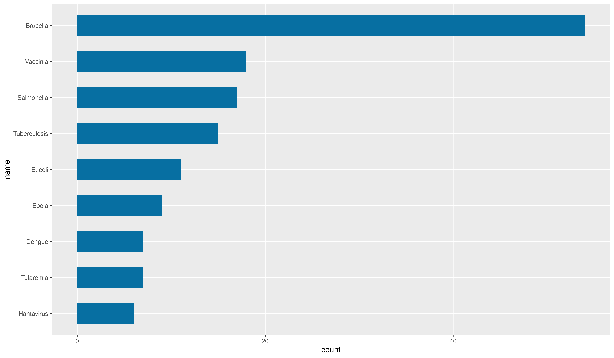
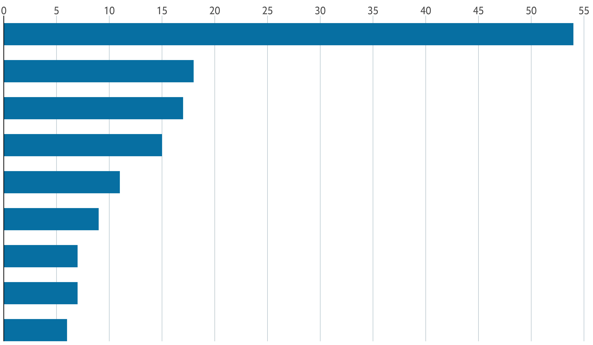
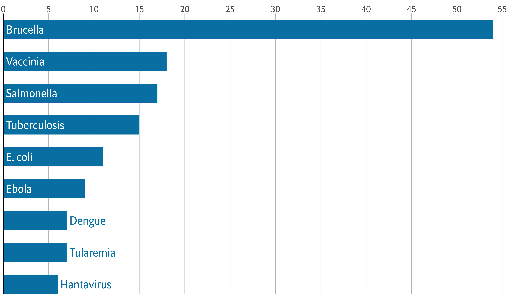
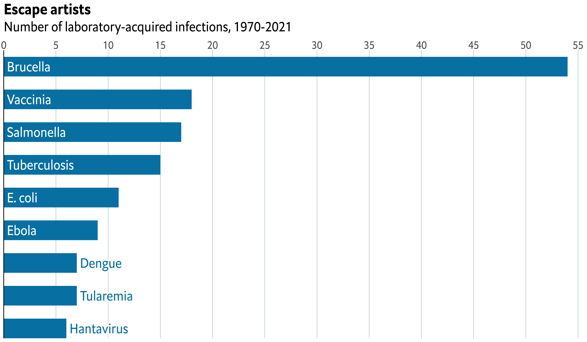
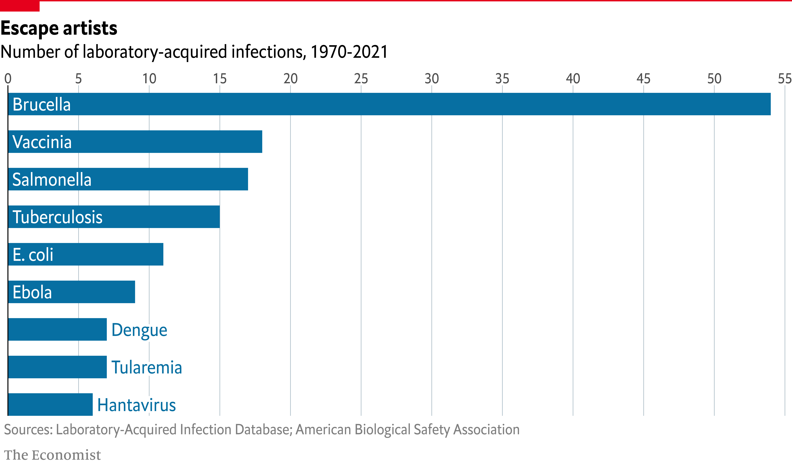

About
This page showcases the work by the data visualization team at The Economist. You can find the original chart in this article.
Thanks to them for all the inspiring and insightful visualizations! Thanks also to Tomás Capretto who replicated the chart in R! 🙏🙏
As a teaser, here is the plot we’re gonna try building:

Load packages
At first sight, one may be tempted to think that today’s chart looks
rather simple. However, it actually contains several subtle
customizations that when added all together make the final result look
beautiful and original. This is also going to be a great opportunity
to use the grid library, the drawing library behind
ggplot2, and
shadowtext, a library that allows us to draw text with shadows.
library(grid)
library(tidyverse)
library(shadowtext)Create data
Let’s get started by creating the objects that are going to hold the data for us. Note these values are inferred from the original plot and not something we computed from the original data source.
names <- c(
"Hantavirus", "Tularemia", "Dengue", "Ebola", "E. coli",
"Tuberculosis", "Salmonella", "Vaccinia", "Brucella"
)
# Name is an ordered factor. We do this to ensure the bars are sorted.
data <- data.frame(
count = c(6, 7, 7, 9, 11, 15, 17, 18, 54),
name = factor(names, levels = names),
y = seq(length(names)) * 0.9
)And let’s also define the colors:
# The colors
BLUE <- "#076fa2"
RED <- "#E3120B"
BLACK <- "#202020"
GREY <- "grey50"Basic barchart
Creating a horizontal
basic barchart
with ggplot2 is quite simple. You use geom_col() passing
the count variable to the first
aes() variable, and name to the second one.
Then, you can also use a different fill and
width, as below:
plt <- ggplot(data) +
geom_col(aes(count, name), fill = BLUE, width = 0.6)
plt

Customize layout
The next step is to customize the layout: modify the axes configuration, change the color of the background, remove the tick marks, add grid lines, change the fonts, and more. Sounds like many things to change? Come on, it’s not going to bee too hard!
plt <- plt +
scale_x_continuous(
limits = c(0, 55.5),
breaks = seq(0, 55, by = 5),
expand = c(0, 0), # The horizontal axis does not extend to either side
position = "top" # Labels are located on the top
) +
# The vertical axis only extends upwards
scale_y_discrete(expand = expansion(add = c(0, 0.5))) +
theme(
# Set background color to white
panel.background = element_rect(fill = "white"),
# Set the color and the width of the grid lines for the horizontal axis
panel.grid.major.x = element_line(color = "#A8BAC4", size = 0.3),
# Remove tick marks by setting their length to 0
axis.ticks.length = unit(0, "mm"),
# Remove the title for both axes
axis.title = element_blank(),
# Only left line of the vertical axis is painted in black
axis.line.y.left = element_line(color = "black"),
# Remove labels from the vertical axis
axis.text.y = element_blank(),
# But customize labels for the horizontal axis
axis.text.x = element_text(family = "Econ Sans Cnd", size = 16)
)
plt

Add labels
Customizing the layout was a big step towards to the final chart. But there’s still work to be done.
So far, the chart doesn’t indicate anything about which disease is represented by each bar. Isn’t it frustrating? So now it is a good idea to add labels to the bars. Let’s do it!
The following chunk uses both geom_text() and
geom_shadowtext(). The first one is used to draw regular
text within the bars of the diseases with a count equal or above 8. On
the other hand geom_shadowtext() is used to draw text
with shadow to the right of the bars of the diseases with a count
below 8. This shadow is a subtle but important detail that hides the
grid line at 10 that passes behind the text.
plt <- plt +
geom_shadowtext(
data = subset(data, count < 8),
aes(count, y = name, label = name),
hjust = 0,
nudge_x = 0.3,
colour = BLUE,
bg.colour = "white",
bg.r = 0.2,
family = "Econ Sans Cnd",
size = 7
) +
geom_text(
data = subset(data, count >= 8),
aes(0, y = name, label = name),
hjust = 0,
nudge_x = 0.3,
colour = "white",
family = "Econ Sans Cnd",
size = 7
)
plt

Add annotations and final tweaks
Adding titles is one of those steps that are simple from the technical point of view but can make a huge difference in the quality of the chart.
The next chunk shows how to add a title and a subtitle to a ggplot2
chart using the labs() function. Later, their aspect is
customized using theme().
plt <- plt +
labs(
title = "Escape artists",
subtitle = "Number of laboratory-acquired infections, 1970-2021"
) +
theme(
plot.title = element_text(
family = "Econ Sans Cnd",
face = "bold",
size = 22
),
plot.subtitle = element_text(
family = "Econ Sans Cnd",
size = 20
)
)
plt

This is how far we were able to get with ggplot2 alone. It’s quite evident the chart does not look like the original chart on top. It’s still missing the red line and rectangle on top, which is like a watermark of visualizations made by The Economist.
We’re going to use the grid library for this task.
grid is a low-level plotting library that comes with any
R installation by default and provides many plotting
primitive functions. It is also the library that
ggplot2 uses to create the charts under the hood, and
that’s why we can combine them in the same chart.
# Make room for annotations
plt <- plt +
theme(
plot.margin = margin(0.05, 0, 0.1, 0.01, "npc")
)
# Print the ggplot2 plot
plt
# Add horizontal line on top
# It goes from x = 0 (left) to x = 1 (right) on the very top of the chart (y = 1)
# You can think of 'gp' and 'gpar' as 'graphical parameters'.
# There we indicate the line color and width
grid.lines(
x = c(0, 1),
y = 1,
gp = gpar(col = "#e5001c", lwd = 4)
)
# Add rectangle on top-left
# lwd = 0 means the rectangle does not have an outer line
# 'just' gives the horizontal and vertical justification
grid.rect(
x = 0,
y = 1,
width = 0.05,
height = 0.025,
just = c("left", "top"),
gp = gpar(fill = "#e5001c", lwd = 0)
)
# We have two captions, so we use grid.text instead of
# the caption provided by ggplot2.
grid.text(
"Sources: Laboratory-Acquired Infection Database; American Biological Safety Association",
x = 0.005,
y = 0.06,
just = c("left", "bottom"),
gp = gpar(
col = GREY,
fontsize = 16,
fontfamily = "Econ Sans Cnd"
)
)
grid.text(
"The Economist",
x = 0.005,
y = 0.005,
just = c("left", "bottom"),
gp = gpar(
col = GREY,
fontsize = 16,
fontfamily = "Milo TE W01"
)
)
Just comparing the sizes of the chunks you can see it definitely takes a considerable amount of extra work to get the details done. But in the end… Aren’t they’re worth it?
The extra mile
If you are attentive to the smallest of the details you may have noticed the titles in the chart above aren’t aligned exactly in the same way than the titles in the original chart.
By default, ggplot2 aligns titles using the panel region
as reference. We asked ggplot2 to use the plot region as reference
when we added plot.title.position = "plot" in the
theme() call. But it was not enought. The title is not
completely aligned to the left border of the chart, which you can
notice by comparing the position of the rectangle on top with the
titles.
This extra step consists of removing the titles generated with
ggplot2 and replacing them with text drawn with the
grix.text() function.
plt <- plt +
labs(title = NULL, subtitle = NULL) +
theme(
plot.margin = margin(0.15, 0, 0.1, 0.01, "npc")
)
plt
grid.text(
"Escape artists",
0,
0.925,
just = c("left", "bottom"),
gp = gpar(
fontsize = 22,
fontface = "bold",
fontfamily = "Econ Sans Cnd"
)
)
grid.text(
"Number of laboratory-acquired infections, 1970-2021",
0,
0.875,
just = c("left", "bottom"),
gp = gpar(
fontsize = 20,
fontfamily = "Econ Sans Cnd"
)
)
grid.lines(
x = c(0, 1),
y = 1,
gp = gpar(col = "#e5001c", lwd = 4)
)
grid.rect(
x = 0,
y = 1,
width = 0.05,
height = 0.025,
just = c("left", "top"),
gp = gpar(fill = "#e5001c", lwd = 0)
)
grid.text(
"Sources: Laboratory-Acquired Infection Database; American Biological Safety Association",
x = 0.005,
y = 0.06,
just = c("left", "bottom"),
gp = gpar(
col = GREY,
fontsize = 16,
fontfamily = "Econ Sans Cnd"
)
)
grid.text(
"The Economist",
x = 0.005,
y = 0.005,
just = c("left", "bottom"),
gp = gpar(
col = GREY,
fontsize = 16,
fontfamily = "Milo TE W01"
)
)

It’s so satisfying to have nail it after so much work!
Final notes
If you attempt to save the plot above with
ggsave() you’ll end up with a file that only reflects
what is done with ggplot2. The right way to save this
chart that mixes ggplot2 and grid is to use
more low-level functions such as png(). For example
# Open file to store the plot
png("plot.png", width = 12, height = 7, units = "in", res = 300)
# Print the plot
plt
grid.text(
"Escape artists",
0,
0.925,
just = c("left", "bottom"),
gp = gpar(
fontsize = 22,
fontface = "bold",
fontfamily = "Econ Sans Cnd"
)
)
grid.text(
"Number of laboratory-acquired infections, 1970-2021",
0,
0.875,
just = c("left", "bottom"),
gp = gpar(
fontsize = 20,
fontfamily = "Econ Sans Cnd"
)
)
grid.lines(
x = c(0, 1),
y = 1,
gp = gpar(col = "#e5001c", lwd = 4)
)
grid.rect(
x = 0,
y = 1,
width = 0.05,
height = 0.025,
just = c("left", "top"),
gp = gpar(fill = "#e5001c", lwd = 0)
)
grid.text(
"Sources: Laboratory-Acquired Infection Database; American Biological Safety Association",
x = 0.005,
y = 0.06,
just = c("left", "bottom"),
gp = gpar(
col = GREY,
fontsize = 16,
fontfamily = "Econ Sans Cnd"
)
)
grid.text(
"The Economist",
x = 0.005,
y = 0.005,
just = c("left", "bottom"),
gp = gpar(
col = GREY,
fontsize = 16,
fontfamily = "Milo TE W01"
)
)
# Close connection
dev.off()